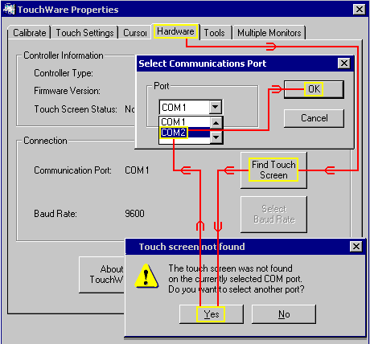
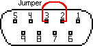

Troubleshooting LIS Serial Ports Operation
Purpose
This procedure provides instructions for troubleshooting serial ports and performing an LIS Loopback Test.
Notes
This section lists some important notes for diagnosing LIS communication issues.
- Procedure is not compatible with Monitors that use a USB cable for the Touch Screen function.
- DxC600i: Software Installation. The software typically sets the CTA connection to COM3. Select , and change the COM port to COM4.
- DxC600i: XP upgrade. The XP upgrade typically swaps the COM4 and COM5 ports on the back of the PC. Move the CTA cable to the other port on the back of the PC after the XP upgrade.
- Original small black DTx PC: Some PCs may have COM3 assigned to the external port that should be COM4. Select . The ports listed should be 1, 2, and 4. If port 3 is listed, then select Advanced and change the COM3 Com Port Number to 4. Port 3 should not be listed because it is reserved for the modem.
- For LXi/DxC600i: A Terminator record missing error that occurs each time a sample is loaded through the CTA indicates an LIS connection issue. The connection from the DxC PC P0/P1 to the Access PC COM2 must be a crossover cable. The default baud rate for the LIS connection is 9600. If 9600 is not working, then try setting it to 19,200 bps. In the Access 2 UI, select .
- To cancel a "send to LIS" over request, where the customer inadvertently requests to send thousands of results to the Host, delete all the message request files named xxxxxxxx_xxxxxx_xxx.lii or xxxxx.lis found in the C:\ drive of the console PC.
- To diagnose a LIS communication issue, first confirm the COM 2 port function, then use the LIS Diagnostics display and the LIS - LISA Diagnostic Program procedure to evaluate message traffic.
- The cable between the Access and the LIS Host should be a crossover cable. For a serial crossover cable, Pin 2 on one end is connected to pin 3 on the other end.
- On early DTx PCs, noise on the serial cable could lock up the COM1 or COM2 port on the PC. The resolution was to reboot the PC to unlock the port. A special serial cable PN 986389 with only the TX, RX, and ground wires connected was used to correct the noise issue permanently .
- A Terminator record missing in LIS message event posted each time the UI console initializes or the Host is queried indicates that the LIS transmission index is corrupt. The C:\NexStep\PC\DRW\ transid.dat file contains an incorrect or corrupt LIS message index value. Delete the contents of the transid.dat file and save the empty file, or replace the file with the copy in the backup folder. Also delete LIS message files named "date_time_index.lii" (ex: 20090102_150906_879.lii) in the C:\ directory.
Troubleshooting the COM 2 Serial Port
Perform these steps to use the touch screen monitor to troubleshoot problems with the PC serial ports.
Note: This procedure is not compatible with Monitors that use a USB cable for the touch screen funtion.
- Confirm that the touch screen touch feature is working, and then move the touch screen serial cable to the COM2 serial port on the rear of the PC.
- Press the
Windows key to reveal the Start menu. From the Start menu:
- For Windows XP, select .
- For Windows NT, select
Note: If a The touch screen is in use by another application error occurs, then use the Task Manager to end the MtsTsMon.exe and ctfmon.exe processes. Relaunch the TouchWare application. - Select the
.
Note: The default baud rate for the touch screen is 9600.

- Attempt to find the Touch Screen on the port where it is connected (ie. COM2).
- If the touch screen is found, then the port is OK. Check the LIS cable and host setup for problems.
- If the touch screen is not found, then:
- Select a different port number from the communications port list. Try all the listed ports. The cable may not be attached to port 2.
- Move the cable to another serial connector and try to find the touch screen there. Select each available port in the Touchware application.
- Reseat the serial port ribbon cable connector on the PC mother board, and then attempt to find the touch screen again.
- If the find process continues to fail, then check the serial port configuration. Select
.
- The listed ports listed should be 1, 2, and 4 (9600 / 8 / None / 1 / None). If port 3 is listed, then right-click COM3. Select , and change the Com Port Number to 4. Port 3 should not be listed because it is reserved for the modem.
- Return the touch screen to COM1, and use Find Touch Screen to detect it.
Loopback Test Procedure
Perform these steps to run a loopback test.
- Disconnect the LIS cable from the COM2 serial port on the back of the PC.
- Connect the loopback test connector to COM2.
Note: If a loopback test connector is not available, then short together pins 2 and 3 of the COM2 serial connector using a paper clip or jumper wire to establish a connection (pin 3 is transmit, pin 2 is receive).

- In the LIS Diagnostic screen, select
Loopback Test to send the loopback data.
Note:
- The loopback test sends a signal out of the send pin, and receives the signal on the receive pin.
- The loopback test connector has the send and receive pins connected internally.
- Passing loopback may indicate that the customer LIS cable does not have a crossover connection. Loopback works on crossover and non-crossover connections. The crossover connects our transmit pin to their receive pin, and their transmit pin to our receive pin (the connections cross).
- Observe the test status message for a Pass/Fail result.
- If the test passes, then the LIS port is OK. Look for issues with the baud rate, LIS cable, or host computer setup.
- If the test fails, then reboot the PC and run the Loopback Test again.
Continued loopback test failures indicate that there is an issue with the Access2 PC COM 2 port.
LIS Connector Configurations
These are the normal pin connections for RJ45, DB9, and DB25 serial connectors.
Note:
- Adapters are not available for order, but may be available locally at an electronics store.
- Swap the RD and TD pins in one DB9 to RJ45 adapter to make it a crossover connector. Only one end of the cable gets a crossover.
- The connector pin numbers are molded into the connector face.
- Only the Signal Ground (SGND), Receive Data (RD), and Transmit Data (TD) pins are needed. Connection of the other pins can introduce noise that could disable the serial port.
Pin-out details for RJ45 to DB9 or DB25 connectors:
| Wire Color | RJ45 Pin | DB9 Pin | DB25 Pin | Signal Name | Description | Connector Pin |
|---|---|---|---|---|---|---|
| Blue | 1 | 6 | 6 | DSR | Not Needed | Unused |
| Orange | 2 | 1 | 8 | DCD | Not Needed | Unused |
| Black | 3 | 4 | 20 | DTR | Not Needed | Unused |
| Red | 4 | 5 | 7 | SGND | Signal Ground | Used |
| Green | 5 | 2 | 3 | RD | Receive Data | Used |
| Yellow | 6 | 3 | 2 | TD | Transmit Data | Used |
| Brown | 7 | 8 | 5 | CTS | Not Needed | Unused |
| White | 8 | 7 | 4 | RTS | Not Needed | Unused |
| N/A | N/A | 9 | 22 | RI | Not Needed | Unused |
Pin locations for RJ45, DB9, and DB25 type connectors: